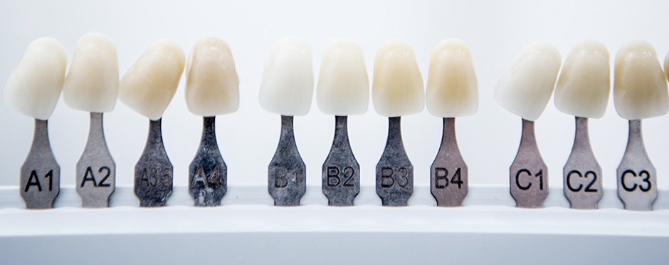
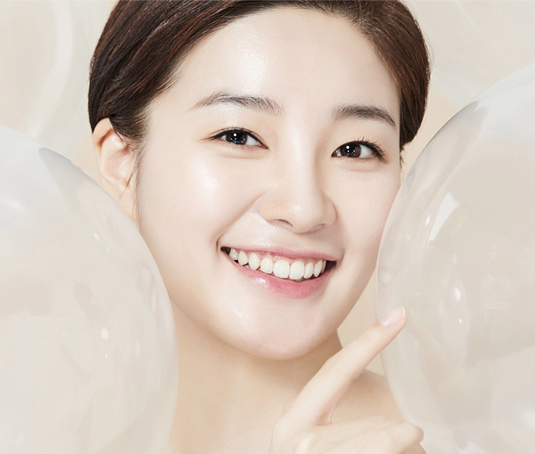
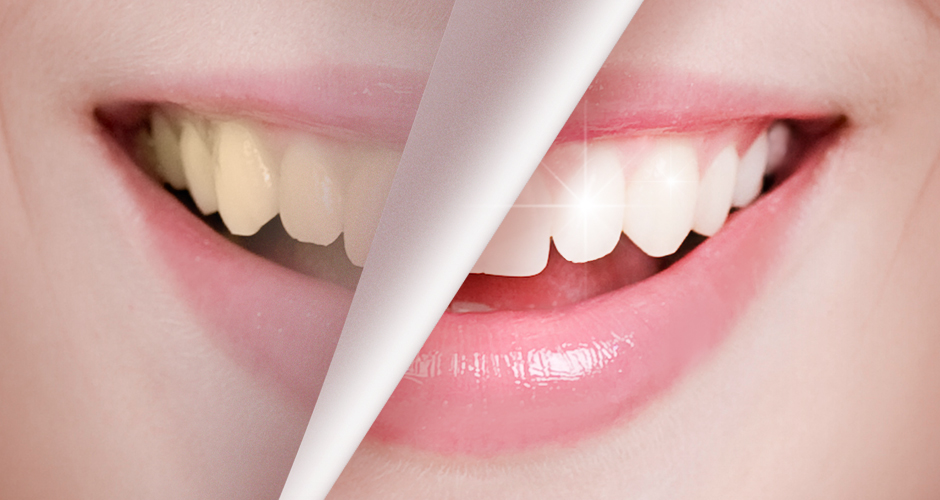
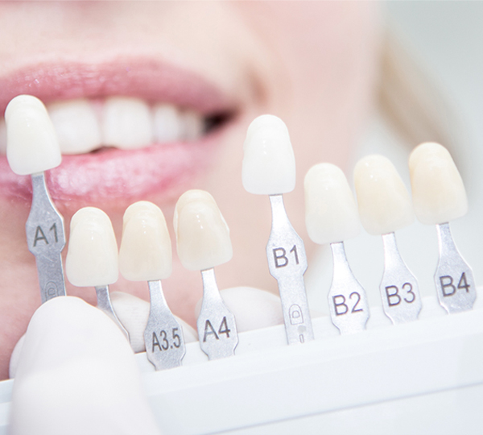
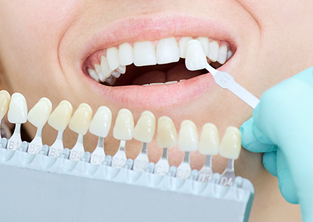
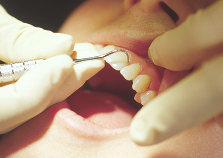
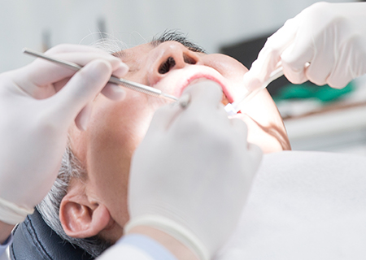
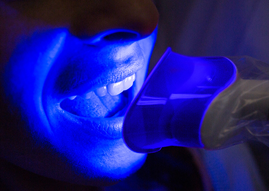

진단
현재 치아색상 및 명도 측정
YONSEI HIVE DENTAL CLINIC
치아미백이란 변색된 치아 표면의 색을 밝게 하는 것으로
치아의 색을 원래의 색조로 회복시키거나 더 하얗게 하는 치료입니다.

밝고 환한 치아를 꿈꾸는 분들이 많습니다.
하얀 치아는 미소에 자신감을 더해주는 역할을 하며,
첫인상에 긍정적인 영향을 줄 수 있기 때문입니다.
치아미백을 위해 다양한 방법이 시도되지만 누렇게 변색된 치아를
보다 희고 밝게 만들어주는 가장 확실한 방법은
역시 치과에서 받는 전문가 미백입니다.


| 전문가미백 | 구분/비교 | 자가미백 |
|---|---|---|
| 치과에서 전문가에 의해 시술 |
방법 | 집에서 스스로 시행 |
| 15분 씩 2~3회, One day |
소요기간 | 3~4주 소요 |
| 과산화수소 15% 이하 |
주성분 농도 |
과산화수소 3.5% ~ 5.4% |
| 한두 개 변색된 치아에도 효과적 |
미백효과 | 한두 개 변색된 치아에는 효과가 미비 |
| 미백 후 이시림 증상이 일시적으로 있을 수 있음 |
주의사항 | 미백제가 잇몸에 닿아 잇몸손상의 우려가 있음 |
<%=m_client_name%>는 전문가 미백 뿐만 아니라
자가 미백 프로그램도 소개해드리고 있습니다.
자가 미백 프로그램이란 1:1 맞춤형 틀에 미백제를 도포하여
집에서 관리하는 것으로 전문가 미백의 효과를 높여줄 수 있습니다.


현재 치아색상 및 명도 측정

미백 시술 전 스케일링 진행

입술 및 잇몸 보호제 도포

치아미백 겔 도포 후 특수 광선 적용